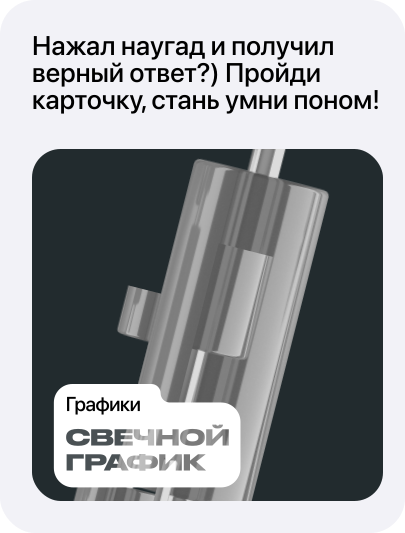

Стайлгайд
Карточка
Статья
Тест
Подписаться
Всё верно!
это ящик с усами
Свечной график – это один из видов финансового графика. Он показывает, как менялась цена актива за определённый временной промежуток.

Хочу ещё тестик пройти